程序设计与算法基础I（白忠建）
代码的第一任务是供人阅读，第二任务才是让机器运行
如果程序很长，看得不是很懂，那就不要尝试优化程序。程序的正确性凌驾于一切。
QQ群，icoding，雨课堂
23.9.11
c语言
课程
"语言工程〞课程分成了两阶段课程：
程序设计与算法基础（第一二学期）：程序设计语言＋数据结构和算法基础。
编译技术（第三学期）：编译原理。
“程序设计与算法基础”分为两阶段课程：
程序设计与算法基础Ⅰ（第一学期，40学时）以C语言为载体，唤起对软件系统的好奇心和探究精神。
程序设计与算法基础Ⅱ（第二学期，48学时）教学内容的重点在数据结构和算法基础。
课程计划

考核方式
icoding有代码抄袭检测，且可以无限次做题
慕课只有一次机会
期末考核方式：机考（机考比纸质试卷更难，但机考成绩往往比笔试更好）
不要不要不要忽略icoding，一定要刷满
*作业单元考试70%*
*加权平均值*
语言先导
名词最重要
计算机
表象：计算机是一个智能设备
计算机的结构
- output
- input
- CPU，内存，硬盘，GPU等
计算机主板最高电压12V
计算机的定义
常规形态的计算机
embed（嵌入式计算机）
只有两种状态的运算叫做逻辑运算。如二进制中，1代表真0代表假。
计算机的结构
软件
操作系统
工具软件
应用程序
硬件
计算
数值运算
二进制运算
向左进位
逢2进1
二进制中不会有超过2的数字，二进制中只有两个数字1 和 0
逻辑计算
逻辑计算通过组合可以得到数值计算的结果
两个特定固定值的计算（能够得到计算结果）的计算叫数值计算
与 - *
或 - +
非 - ！
计算机只会做加法
乘法：a乘b，即加b个a
除法：a除b，a不停减b，减到小于b为止，并记录做减法的次数，次数即为商剩下的数即为余数
cpu唯一能懂的语言只有二进制代码
compile编译 compiler编译器 interpret解释 interpreter解释器
python的解释器的底层是c语言
最早的语言是汇编语言
c语言的编译器是用c语言写的，这种现象叫做自限
编译器编译 - 链接器链接
23.9.18
1. 一个变量在内存中占用几个字节，由它的类型type决定。
如：整形int - 四字节
类型决定：
1. 这个数据在内存中占据几个字节
2. 这个数据占用的内存布局是什么样的
3. 这个数据能够参与什么样的运算
c语言是强类型语言（每个数据一定会有一个类型）
- 在c语言中，任何一个程序都有类型
弱类型语言：数据可以没有类型。如python
2. printf，scanf，int，d，%， &，\n ：
#include <stdio.h>
//引用头文件“stdio.h”
//.h - headfile
int main() {
//main是函数的名字
//()是函数的标志
//任何函数都是从main的第一行开始，执行到main的最后一行return结束
//int是返回值类型，表示返回值类型为整形
int a, b;
//使用int来定义变量
a = 0;
b = 0;
scanf("%d%d", &a, &b);
//scanf - scan format - 格式化输入
//双引号扩起来的是字符串
//”d“代表 decimal 即 十进制
//”%d“是格式占位符，含义就是要将从键盘输入的这些合法的字符转化成一个十进制`整形`。（输出时%d会被一个十进制数替换）
//”&“是一个取地址运算符，&后面加变量名表示“该变量的地址”，所以&a就表示变量 a 的地址。
//”&a“又称为“取地址a”，就相当于将数据存入以变量 a 的地址为地址的变量中。
//scanf("%d%d", &a, &b);
//”%d%d“中没有空格，系统默认的分隔符是一个空格
//若改为”%d,%d“，则运行后输入时要输入”1,1“
//“\n”是换行符
printf ("%d + %d = %d\n", a, b, a + b);
//printf - 格式化输出
return 0;
//表示返回值为0
//用来指示main函数执行是否出错，若返回值为0则没有出错，若不为0则可能出错
}
3. 计算三角形面积。（标志符，关键字，类型type，字面值literal，常量constent，赋值符号，左值（lvalun），右值（rvalun））：
//计算三角形面积
# include <stdio.h>
int main() {
float width, height, area;
scanf("%f%f", &width, &height);
//scanf函数后边括号中是`格式字符串`
//如果格式字符串中有不属于格式占位符的符号，输入时要原样输入。
//"%f"表示浮点数的格式占位符
area = width * height / 2.0f;
//"="是赋值符号
//右值：只能出现在赋值号右边（所有的字面值`literal`都是右值，都是常量`constent`）
//如“2”
//左值：既可以出现在赋值号左边也可以出现在赋值号右边
//"2.0f"可以把2.0这个double型的数据转变为float类型
printf("area = %.2f\n", area);
//"%.2f"表示float类型保留两位小数
//不同类型的数据之间的运算
//原则：范围小的向范围大的类型转换
return 0;
}
//标志符：程序中出现的词。
//关键字：如include，int，main等。标志符不能是关键字
4. 现在的电脑是冯诺依曼体系
- 信息以二进制存储。
- 信息存储在电脑上。
23.9.20
1. 输入半径，求球体的体积("%lf")
错误的程序，无法正确计算：
#include <stdio.h>
int main() {
double radius, volumn;
// radius(半径)，volumn(体积)
printf("请输入球的半径：");
scanf("%lf", &radius);
// %lf表示长浮点型
volumn = 4 / 3 * 3.14 * radius * radius * radius;
printf("体积 = %lf\n", volumn);
return 0;
}
// 输入1得出3
因为这么写的话4 / 3的结果是1。（c语言中整数除以整数结果只能是整数）
更改：把4改成4.0，把3改成3.0
#include <stdio.h>
int main() {
double radius, volumn;
// radius(半径)，volumn(体积)
printf("请输入球的半径：");
scanf("%lf", &radius);
// %lf表示长浮点型
volumn = 4.0 / 3.0 * 3.14 * radius * radius * radius;
printf("体积 = %lf\n", volumn);
return 0;
// 可以得出正确的结果
}
3.14不够精确，怎么方便地让它更精确呢？ - 定义一个常量。
#include <stdio.h>
#define PI 3.1415926 // macro - 定义一个宏（宏定义：一处修改处处生效）
// 定义常量的第一种方法
// 定义"PI"为"3.1415926"
const double PI = 3.1415926;
// 定义常量的第二种方法：定义一个常量
// const是定义函数
// 一个程序中的定义方式最好只有一种，不要一会define一会const
int main() {
double radius, volumn;
// radius(半径)，volumn(体积)
printf("请输入球的半径：");
scanf("%lf", &radius);
// %lf表示长浮点型
volumn = 4.0 / 3.0 * PI * radius * radius * radius;
printf("体积 = %lf\n", volumn);
return 0;
}
2. win下的换行包括两个字符\r\n，而类unix（如Linux，macOS）和unix下只有一个字符\n，所以同一个文本文件（10行）win下比linux下大10bit。
3. c语言的编译预处理：宏定义的处理属于预处理
4. 二进制中（32位）0 - 1等于111111...（32个1），32个1（带符号数）表示 -1，32个1（无符号数）就表示32个1。所以无符号数不可能小于0。
# include <stdio.h>
int main() {
unsigned a = 0; // "unsigned"无符号整型
printf("%u,%d\n", a, a - 1);
return 0;
}
5. 字符的ASCII码
- 对于具体用哪些二进制数字表示哪个符号，美国有关的标准化组织就出台了ASCII编码，统一规定了上述常用符号用哪些二进制数来表示，这就是字符的ASCII码。
- 到目前为止共定义了128个字符
ASCII码：
控制符：LF(换行)、CR(回车)、FF(换页)、DEL(删除)、BS(退格)、BEL(响铃)等；
通信专用字符：SOH（文头）、EOT（文尾）、ACK（确认）等；
ASCII值为8、9、10 和13 分别转换为退格、制表、换行和回车字符。它们并没有特定的图形显示，但会依不同的应用程序，而对文本显示有不同的影响。
32～126(共95个)是字符(32是空格)，其中48～57为0到9十个阿拉伯数字。
65～90为26个大写英文字母，97～122号为26个小写英文字母，其余为一些标点符号、运算符号等。
6. n位二进制数就可以表示2⌃n种数据（因为n位二进制数一共有2⌃n种不同的数字）
7. 数据类型：字符（char，getchar，putchar）
getchar()是在输入缓冲区顺序读入一个字符(包括空格、回车和Tab)
第一次getchar()时，确实需要人工的输入，但是如果你输了多个字符，以后的getchar()再执行时就会直接从缓冲区中读取了。
# include <stdio.h>
int main() {
char a = '0', b = '0'; // "char"是字符声明函数
// printf("%c,%d\n", a, a); // %c - 输出字符0 // %d - 输出字符0的ASCII码
// printf("%c\n", a + 1);
// printf("%d\n", a - 48);
// printf("%d\n", a - '0');
scanf("%c", &b);
a = getchar(); // getchar函数 - 要求输入一个字符 - 并把字符的asiic码
putchar(a); // putchar函数 - 输出一个字符 - 输出变量a中储存的字符
putchar(b); // 输出变量b中储存的字符
return 0;
}
printable - 可打印的
23.9.25
1. 算数运算符
+叫做二元运算符，也叫双目运算符。有两个操作数（operand）%叫做模运算符，即除以取余数。如：123 % 10的值是3。（尽量不要写负数取模，因为没有明确规定这个运算）/是除运算符，得到的是整数。++是自增运算符，是一元运算符。如：++a表示a加上1，叫做前缀自加，这个表达式的值是a自加后的值。a++叫做后缀自加，这个表达式的值是a自加前的值。一般使用前缀自加，尽量避免后缀自加的使用b = a++ + ++a;这个式子在不同编译器中的结果不同，所以不管它。
auto b = a++;
// 这行代码就相当于：
// t = a;
// ++a;
// b = t;
练习：将一个三位数拆分为不同数位
int main()
{
int a = 0;
int b = 0;
int c = 0;
int d = 0; // 初始化a,b,c,d
printf("请输入一个三位数：");
scanf("%d", &a);
b = a / 100;
c = a % 100 / 10;
d = a % 10;
printf("百位,十位,个位：%d,%d,%d\n", b, c, d);
return 0;
}
2. 表达式与语句
- 任何一个
c语言表达式都会得到一个结果，这个结果叫做表达式的值。 - 任何表达式后边加上一个
;，它就会变成一个语句。 - 表达式的结果必须由一个右值（
=右边的值）承载。 - 表达式的值和变量的值是两个完全不同的概念。
- 单个变量或单个常量都可以成为一个表达式。只由变量或常量组成的表达式叫做源表达式（最简单的表达式）。
3. 可比较与不可比较
- 所有的数值类型都是可比较的。
4. 关系运算符
>, <, ==（等于）（因为=是赋值运算符了，所以以==为等于的关系运算符）, !=（不等于），>=（大于等于）, <=（小于等于）
- 关系运算符的结果是逻辑运算结果只有真假两个结果。
- 在c23标准以前，如果结果为
逻辑真，则就为此表达式赋值为1；如果结果为逻辑假，则为此表达式赋值为0 - 在c语言中，如果
0代表假，任何非零值都表示真，如0.5，3.14，2等
运算符的级连
如：a < b < c
结合性：从左到右结合
即：(a < b) < c，最后的结果是真，即1
int main()
{
int a = 4, b = 3, c = 2;
a > b > c
// 不成立（假）
// 相当于(a > b) > c
// 因为，对于这行代码，会先判断a > b为真并将此表达式赋值为1，然后判断1 > c不成立，最后的结果为假，故将整个表达式赋值为0
return 0;
}
5. 逻辑运算符
逻辑运算符要连接两个逻辑表达式
&& - 且（并且） - 都为真才为真，否则为假
|| - 或 - 有一个为真即为真
! - 非 - 输入真输出假，输入假输出真
int main()
{
int a = 4, b = 3, c = 2;
(a > b) && (b > c) // 结果为真
!!(a > b) // 结果是假（`a > b`是真，`!(a > b)`是假，`!!(a > b)`是真）
a && b
// 其中a和b被强制当成了两个逻辑表达式，又因为a，b是4，3，会被c判断成真，所以此式子的结果是真（1）
// a && b <==> (a != 0) && (b != 0)
return 0;
}
- 逻辑运算的短路：
(a > b) || (b < c)
// 在||（或）运算符中，如果a > b为真，那么后边的运算就没有必要进行了，所以编译器就不会进行之后的运算。
关系运算符的地位比逻辑运算符更高
目前c语言已经引入了布尔类型
int main()
{
int a = 4, b = 3;
bool c = a > b;
// 这之中c就是true或false
return 0;
}
23.9.27
1. #读作shar
2. 逗号运算符
作用：分隔和连接不同的表达式 - 会从左向右依次计算每一个表达式 - 最后的结果是最右边的表达式的计算结果
逗号运算符的优先级（除赋值运算符之外）最低
int main()
{
int a = 4, b = 5, c = 6;
int d = a, b, c;
return 0;
}
其中：d的值是6
3. javascript（js）跟java没有半毛钱关系
4. if语句
int score;
scanf("%d", &score);
if (score >= 60) {
printf("pass\n"); // if语句下面的函数叫做if的子分支。
// 只要if中的表达式为真，if的子分支中的真分支就会执行。
}
else {
printf("failed\n");
// if是主语句。else不是语句，而是从句（else不能单独成为一条语句）
// if是主语句。else不是语句，而是从句（else不能单独成为一条语句）
}
代替if else的运算符：
// c语言中存在替代if else双分支的运算符`?`和`:` - 叫做条件运算符
printf(score >= 60 ? "pass\n" : "failed\\n"); // 意思是如果表达式为真，结果就是`?`后面的值；如果表达式为假，结果就是`:`后面的值。 // 等价于上面的if else
// 但是最好还是写if else，更加易读
如果不是二元判断，而是多元的判断怎么办呢？
我们首先想到的是if语句的嵌套
if (score >= 60)
printf("pass\n");
else
{ // else语句下只能有一个语句，要想写多个语句，必须使用花括号括起来
if (score >= 80)
printf("B\n");
else
;
}
但是这个代码太丑陋啦，怎么写能让它更漂亮呢？
int score;
scanf("%d", &score);
if (score >= 90) {
printf("A\n"); // if语句下面的函数叫做if的子分支。
}
// 只要if语句从上到下开始判断，遇到真条件即执行，执行后下面的条件不再判断，直接跳过。
else if (score >= 80) {
printf("B\n");
}
else if (score >= 70) {
printf("C\n");
}
else if (score >= 60) {
printf("D\n");
}
else {
printf("F\n");
} // 多分支的if语句中，else语句可以省略
但是这样还是略显啰嗦，我们可以：
int score;
char level;
scanf("%d", &score);
if (score >= 90) {
level = 'A'; // if语句下面的函数叫做if的子分支。
}
// 只要if语句从上到下开始判断，遇到真条件即执行，执行后下面的条件不再判断，直接跳过。
else if (score >= 80) {
level = 'B';
}
else if (score >= 70) {
level = 'C';
}
else if (score >= 60) {
level = 'D';
}
else {
level = 'F';
} // 多分支的if语句中，else语句可以省略
printf("%c\n", level);
用switch case实现相同的功能
int score;
char level;
scanf("%d", &score);
switch (score / 10) // switch（匹配），看score这个变量和哪个case匹配 // 用switch case时必须要把一个区间映射到一个单点上时
{
case 10:
[[fallthrough]]; // 告诉编译器这是我们故意让它下落的，而不是一个错误。
case 9: // case后必须跟整型常量
level = 'A';
break;
case 8:
level = 'B';
break;
case 7:
level = 'C';
break;
case 6:
level = 'D';
break;
default:
level = 'F';
// switch case的一个特点：下落(fallthrough)（会一直判断所有的case，直到结束）（如果不加break的话会进行到default从而将level赋值为F）
// case标号和default标号只能出现在switch语句下
// 能用switch case的尽量用switch case
}
printf("%c\n", level);
5. vs code中的c.json
自动填充c语言框架：
"c frame":
{
"prefix": "cmain",
"body": [
"#include <stdio.h>",
"",
"int main()",
"{",
"",
"",
" return 0;",
"}"
]
}
这样，我们在新建的文件中输入cmain，即可自动填充c的框架
23.10.9
1. 循环
- 循环必须要初始化
- 循环必须要有执行条件
x叫做循环控制变量（控制循环的次数）- 循环可以使用break来中断
while循环
如：
int s = 0, x = 0;
while(x <= n);{
s += x; // s += x;等价于 s = s + x;
++x; // 在可能的情况下尽量使用前缀自加
}
其中：
- int为循环的
初始化 - 括号内为循环进行的
条件判断
for循环
如：
int s = 0, x;
for(x = 0;x <= n; ++x) // "x = 0"是初始化；"
{
s += x;
}
执行顺序：
初始化只执行一次- 接下来执行
条件判断 - 条件判断成立之后执行
循环体 - 循环体执行之后再
自增
do循环
如：
int s = 0, x = 0;
do {
s += x;
++x;
} while(x <= n);
循环体中可以添加break;使循环中断。
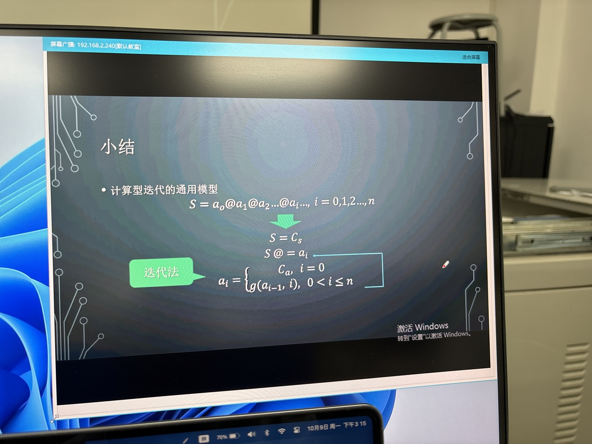
2. 练习
1. 求n的阶乘
#include <stdio.h>
int main()
{
unsigned long n, i, fact;
scanf("%lu", &n);
fact = 1;
for (i = 1; i <= n; ++i)
fact *= i;
printf("%lu\n", fact);
return 0;
}
2. 求数列{n的阶乘的倒数}的前项和
标准答案：
#include <stdio.h>
int main()
{
unsigned long n, fact;
double s;
scanf("%lu", &n); // %lu是unsigned的占位符
s = 0.0; // 不能写s = 0; 因为0是整形，如果这么写除法就默认没有余数了。
fact = 1;
for (unsigned long i = 1; i <= n;)
{
s += 1.0 / fact; // 等价于s = s + (1.0 / fact);
++i;
fact *= i;
}
printf("%lf\n", s); // %lf是double的占位符
return 0;
}
3. 求斐波那契数列的第n项
我的答案：
#include <stdio.h>
int main()
{
int a = 1, b = 1, i;
int c = 1;
int x = 0;
scanf("%d", &i);
if (i == 1)
// printf("%d\n", c);
;
else if (i == 2)
// printf("%d\n", c);
;
else
while (x < i - 2)
{
c = a + b;
a = b;
b = c;
++x;
/* code */
}
printf("%d\n", c);
return 0;
}
标准答案：
#include <stdio.h>
int main()
{
unsigned long n, f1 = 1, f2 = 1, f3 = 1;
unsigned long i;
scanf("%lu", &n);
for (i = 3; i <= n; ++i)
{
f3 = f1 + f2;
f1 = f2;
f2 = f3;
}
printf("%lu\n", f3);
return 0;
}
23.10.11
1. 赋值表达式所做的两件事：
- 将值赋给变量
- 整个式子的值变为所赋变量的值
2. 类型强制转换
(int)(x / 3.14)
- x是浮点值
- 强制把(x / 3.14)转换为整形
3. 绝对值函数
fabs(a) - 取a的绝对值
4. 练习
1. 将字符更改为整形：
getchar()是在输入缓冲区顺序读入一个字符(包括空格、回车和Tab)
第一次getchar()时，确实需要人工的输入，但是如果你输了多个字符，以后的getchar()再执行时就会直接从缓冲区中读取了。
键盘输入的字符都存到缓冲区内,一旦键入回车,getchar就进入缓冲区读取字符,一次只返回第一个字符作为getchar函数的值,如果有循环或足够多的getchar语句,就会依次读出缓冲区内的所有字符直到'\n'.
#include <stdio.h>
int main()
{
char c;
int i;
i = 0;
// while ((c = getchar()) != '\n')
// {
// int j = c - '0';
// i = i * 10 + j;
// }
c = getchar();
while ((c = getchar()) != '\n')
{
int j = c - '0';
i = i * 10 + j;
c = getchar();
}
printf("%d\n", i);
return 0;
}
2. 利用cosx的泰勒展开式求解cosx的近似值：

#include <stdio.h>
#include <math.h> // 调用c语言的数学库。
int main()
{
// 先确定需要变量的个数：分子，分母，更改正负号，cosx的值，自变量x。共五个变量。
const long n = 20; // const表示n是一个常量；long表示n是一个长整数。 // n代表计算的项数。
const double _2pi = 2.0 * 3.1415926;
const double esp = 1E-7; // 1E-7是科学计数法表示10的-7次方（0.0000001）。
double b, x, cosx, a, cosx_old; // a表示分子 // 这里把b改为double是因为long存不下b了，b太大了。
long i, sign; // b表示分母；sign表示每一项的正负号；i表示循环次数的二倍（为什么要乘2？因为cosx的泰勒展开式的每一项递推2（偶数））
// 初始化：
cosx = 1.0;
cosx_old = 2.0; // 给出一个不可能的初始值（使差值一定不小于1E-7）（反正在第一次循环之后会改变）
sign = -1;
scanf("%lf", &x);
x -= (int)(x / _2pi) * _2pi; // 由cosx的周期为2pi从而缩小x，从而减小cosx泰勒展开式的误差。
// (int)(x / _2pi) 表示将x / _2pi强制转换为整形
a = x * x;
b = 2;
// 初始化结束
for (i = 2; i <= n * 2; i += 2)
{
cosx += sign * a / b;
// 递推：
a *= x * x;
b *= (i + 1) * (i + 2);
sign *= -1;
// 使结果精确到小数点后七位:
// 如果连续两次cosx的结果之差小于1E-7，则中断for循环直接输出结果
if (fabs(cosx_old - cosx) < esp) // fabs - 取绝对值
{
break; // 中断循环
}
cosx_old = cosx;
}
printf("cosx=%.5lf\n", cosx);
// 验证结果是否正确：
printf("cos(x)=%.5lf\ni=%ld\n", cos(x), i);
return 0;
}
23.10.16
1. 数组
matrix（矩阵）
数组是同类型的变量的集合，是一种连续存储的结构
根据聚合方式，数组有一维数组、二维数组、多维数组。
定义
int a[10];
其中：
- a是变量名。
- 方括号的对数代表数组的维数。
- 方括号中间的
常数表示此维的长度（数组的长度是固定的）：[10]表示此数组由10个单元（分量）构成 int- 数组基类型 - 表示此数组的每个单元的类型是int- 上数组占据
40byte的存储（10个整形，每个整形占据4byte）
数组的三个约束条件：
- 数组的维度
- 每个维度的长度
- 数组的基类型（每个维度的量的类型）
在定义一维数组的同时，也定义了一种新的数据类型（一维数据类型）：int [10]
其中：
int [10]是一种（新定义的）类型名。- 变量名要写在
int和[]中间
一维数组的存储结构（以int [10]为例）：
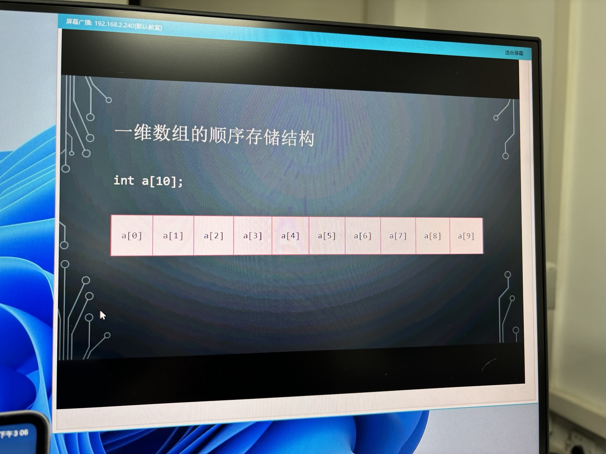
- 如果a[0]的地址是1000，则a[3]的地址就是1012，1000-1039之间都是安全地址
a[10]及以后为未知单元，对未知单元的访问叫做下标越界，下标越界是c语言中的常见错误a[-1]不在a[0]的左边（-1的补码是二进制中的全1）
一维数组的两种使用方法
- 使用数组本身 - a
- 使用数组的元素（分量） - a[i] - 表示访问数组的第i个分量（左值（即可出现在赋值号左边也可出现在赋值号右边）） - 理解：
a[i]就是这个变量的名字
数组的遍历：把数组的每个元素都使用一遍
一维数组的初始化
int a[5] = {1, 2, 3, 4, 5};
其中：
- a[2]是3
- a[5]是？ - 下标越界
- 当给出数值数量不够时，编译器会自动补0 - 0初始化规则
- 初始化只能后面缺少数值，前面不能缺少
指定初始化：
int b[100] = { [5] = 1, [23] = 4 };
意思是：下标为5的值为1，下标为23的值为4
编译器允许：int d[] = {1, 2, 3, 4, 5};
此时会自动计算长度
二维数组
int a[4][5]
// 前一个中括号是行，后一个中括号是列
- 4行5列共20个元素。
- 按行序连续存储。例如：
a[1][0]紧接在a[0][4]之后。
阅读二维数组
视角一：类似矩阵的数阵（注意是从0开始的而不是从1开始）（int (a)[4][5]）
- a[i]是一个
二维数组的名字，其类型为：int [4][5]
视角二：元素为一维数组的一维数组（两个维度分开）（int (a[4])[5]） - 如：a[3]是一个一维数组，它的长度是5.（在int a[4]中，a是一个一维数组，它的长度是4）
-
a[i]是一个一维数组的名字，其类型为：
int [5] -
a[i][j]是一个整型变量的名字，其类型为
int
2. c语言中的随机值
#include <stdio.h>
// 生成随机数需要的头文件：
#include <stdlib.h>
#include <time.h>
int main(void)
{
srand(time(NULL));
// 随机数初始化只需在main函数中执行一次 // srand括号中的东西叫做种子，用time当种子可以使每时每刻产生的随机数都不同
// 如果随机数初始化器没有被执行，则rand()表示的数组在所有的电脑上是固定的
int a;
a = rand() % 100; // 产生的随机数在0～100之间（除以100的余数只能是0～100）
printf("%d\n", a);
return 0;
}
3. 数据类型确定了：
- 占据内存大小
- 类型的内存布局
- 能够参与什么运算
4. c语言中的特殊符号：
1. [] - 与数组相关
2. * - 与指针相关
3. () - 与函数相关
5. 冒泡排序法
#include <stdio.h>
#define N 10
int main()
{
int a[N] = {2, 2, 3, 5, 7, 2, 5, 1, 9, 4};
int i, j, temp;
for (i = 0; i < N - 1; i++) // 外循环设置排序趟数，N个数进行N-1次排序
{
/* code */
for (j = 0; j < N - i - 1; j++) // 内循环设置每趟比较的次数，第i躺比较i-1次。
{
/* code */
if (a[j] > a[j + 1]) // 相邻元素比较，若逆序则交换
{
temp = a[j];
a[j] = a[j + 1];
a[j + 1] = temp;
}
}
}
for (i = 0; i < N - 1; i++)
{
/* code */
printf("%d ", a[i]);
}
printf("\n");
return 0;
}
23.10.23
1. 指针
背景知识
-
地址是无符号整型
-
不能指望地址是固定的
-
代码和数据都存在内存中
- 数据单元存储的不一定是变量
- 以后称有效的内存单元为“对象”
-
如果对象占据多个字节把第一个字节的地址称为是对象的地址
-
内存对齐：八字节对齐 - 每个单元的起始地址都是八的倍数
-
访问一个对象的两种方式：1. 名字。2. 地址
指针变量
- 指针就是地址
- 指针变量就是存储其他对象地址的变量
- 一个指针在主流机器（64位）上的长度是64位
- 当声明变量时编译器就会为它分配一个地址
- 指针变量的占位符是
%p
定义指针变量：
#include <stdio.h>
int main()
{
int i;
int *p; // 未初始化的指针 - 野指针（wild pointer）
/* -------让指针p获取i的地址-------- */
p = &i; // 称为指针p指向了i
// & 是取地址运算符
return 0;
}
- 指针变量只能保存地址
- 当使用指针时一定有两个点：
int *p;&p = &i;
空指针：
int *p = NULL; // NULL是0的代名词
// 即 p == NULL 等价于 !p
指针变量的两个约束：
*说明p是一个指针，只能用来存储地址int是指针的基类型，即指向单元的类型（只能存整数单元的地址）- 变量p的类型是
int *
取地址和间接访问
int i = 0;
int *p; // 未初始化的指针是野指针
p = &i; // 获取 i 的地址
*p = 1; // 等价于i = 1 // 即 *p 等价于 p 指向的对象
++*p; // 等价于 ++i // 多个运算符的优先级 - 就近原则： ++*p 中 * 获得了对p的优先访问权
*p++; // 不等价于 i++ // 因为后缀自加具有非常高的优先级 - 整个表达式为i的值，即0（？）
如果要在一行中定义多个指针：
int *p, *t; // 正确
int* p, t; // 不正确
野指针使用的危险
*p 的值会被设为0x0；0地址是一个受保护的地址。
指针的运算
指针的算数运算
p在原来的基础上加上n乘以其基类型的大小
如果有：int a, *p = &a;和int n;，则运算p+n的结果是一个新的指针值，其值等于：address(a) + sizeof(int)。而不是：address(a) + 1
指针指向数组元素：（通过指针遍历数组）
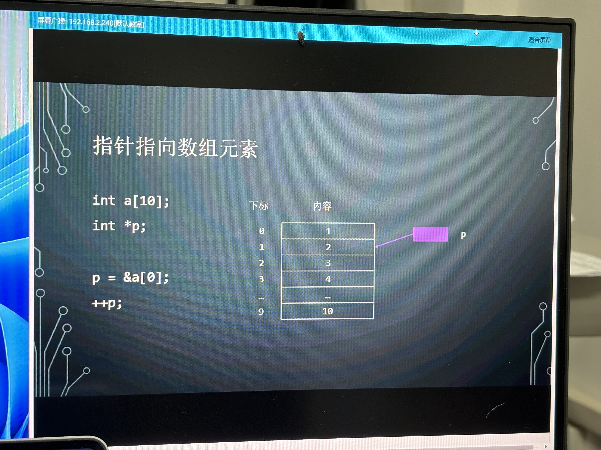
注意：
- 两个指针的加法，乘法和除法是无意义的。
- 两个指针的减法是有意义的，能得到一个整数值，表示两个指针之间的距离（以单元而不是字节计）。
如果要求两个地址的中间值：
指针的条件运算
指针是可以比较大小的，前面的指针小于后面的指针
数组和指针的关系
数组名a被视为是一个常量指针，其值恒等于&a[0]
例如：
*a = 7; 等价于 a[0] = 7;
*(a + 1) = 12; 等价于 a[1] = 12;
指向一维数组的指针
指向数组元素的指针
int a[10], *p = a; // 区别于 *p = &a;
p的类型是 int*，其基类型是int •因此，在P“眼中”，它指向的是单个整数单元：它并不 “知道”数组有多长。 • ++p将使p跳过一个int单元
一些基本的等价关系：
int a［10］，*p = a; // 等价于 P= &a［0］，因为a代表了a［0］的地址
1. p === a === &a[0]
2. *p === *a === a[0]
3. p[i] === a[i]
4. p+imati itPai+a
5. *(p+i) === *(a+1) === a[i]
6. i[a] === a[i]
// 在编译器眼中，一切数组都会被转为指针解释，i[a]和a[i]都会被转换为* (i + a)
指向一维数组（整体）的指针
如果将数组作为整体看待，并且用一个指针指向，那么这个指针就是“指向数组的指针”
因此，指向数组的指针定义为：
int (*p)[10];
p会被先解析为一个数组
const对指针变量的修饰
//const-pointer.c
/*
本程序演示了指针用const约束时的情况
*/
typedef int* INTP;
int main() {
int i = 0;
int j = 1;
// --- case 1
const int *p = &i; // 指向常量的变量指针：const修饰的是int
*p = 1; // error：在p“眼里”，它指向的是个常量
p = &j; // OK, p本身是变量，可以指向其它整数变量
// --- case 2
// const int 和 int const是等价的！
const int a = 0;
int const b = 0; // 等价于：const int b = 0;
// case 2 涉及的内容，我在课堂上说，const修饰的是*。这是错误的！！！
// 这里，我诚挚地向大家道歉，同时向指出这个问题的同学表示深深的感谢！
int const *q = &i; // 等价于 const int *q，q是指向常量的变量指针。
*q = 1; // error：在p“眼里”，它指向的是个常量
q = &j; // OK, p本身是变量，可以指向其它整数变量
// --- case 3
// case 3 涉及的内容，我在课堂上讲的也有些模糊甚至错误。这里给出更清晰的解释。同样向大家道歉！
int * const t = &i; // 指向了变量单元的常量指针：const修饰的是int *。
// 这说明int *是个常量，即指针是常量；而该指针的基类型是int，没有const约束，因此是变量
*t = 1; // OK，t是常量，但它指向的变量
t = &j; // error，t是常量不能修改
// --- case 4
const INTP x = &i; // 等价于：int * const x;
INTP const y = &j; // 等价于：int * const y;
*x = 1; // OK
*y = 2; // OK
x = &j; // error
y = &i; // error
return 0;
}
// 以下展示指针作为参数的情况。
// 以下，f1和f2的参数列表等价
void f1(const int *x) { // case 1
int i = -1;
*x = i; // error
x = &i; // OK
}
void f2(int const *x) { // case 2
int i = -1;
*x = i; // error
x = &i; // OK
}
// 以下，f3、f4和f5的参数列表等价
void f3(int * const x) { // case 3
int i = -1;
*x = i; // OK
x = &i; // error
}
void f4(const INTP x) { // case 4
int i = -1;
*x = i; // OK
x = &i; // error
}
void f5(INTP const x) { // case 4
int i = -1;
*x = i; // OK
x = &i; // error
}
Bjarne在他的The C++ Programming Language里面给出过一个助记的方法：把一个声明从右向左读。
char * const cp; ( * 读成 pointer to )
// cp is a const pointer to char
const char * p;
// p is a pointer to const char;
char const * p; // 等价于const char * p;
注：
一个单元可以被多个指针指向（即此单元被多个指针共享 - 存在潜在的危险）
我们把数组最后一个元素的下一个（这个虚拟元素）叫做：‘哨兵’ - 标志着这个存储的结束
只要p指向了数组中的一个元素，p就可以当成一个数组
指针（地址）的大小与指针指向的单元无关
23.10.30
1. 函数
如：
double average(double x, double y) {
return (x + y) / 2.0;
}
函数的标志：名字后跟了一对圆括号。
函数的两大成分：参数列表，返回值类型
- 圆括号前是
函数名，圆括号内部是参数列表。 - 函数名前的是
返回值类型。 - {}内是函数体。
- return语句是返回值语句。
- 函数的定义要在main函数外
使用函数称为函数调用
函数原型/签名
double average(double x, double y)
即函数的名字，与变量的名字
函数的类型
即double (double, double)
函数的形式参数
在定义或声明函数时，函数名后（）里的内容称为“函数的参数（列表）”。
这里的参数（x和y）又称为“形式参数”，是一种“占位”机制。即： 在函数体中，形式参数虽参与了运算，但没有具体值，只体现了它们的作用。
函数的实际参数
double a = 11, b = 33, c;
c = average(a, b);
实际参数一定是有值的
在调用函数时，给出的参数（a和b）称为“实际参数”
实际参数将它们的值传递给形式参数，从而使函数的计算有效
函数的参数传递 - 对位传递&传值调用
double average(double x, double y); //声明
c = average (a, b); //调用
C语言采用这样的方式传递参数
对位传递。main函数中的实际参数的值传递给定义函数中对应位置(int x, int y)上的形式参数。
传值调用（caLL by vaLue）。简单类型的形式参数是实际参数的副本，即：形式参数的改变不影响实际参数。
函数返回
任何函数大部分都会计算出一个结果 - 函数只能返回一个值。
该结果的类型可以简单类型，结构类型，但不能是数组和函数类型。
如果函数不需要具体结果，那么这个返回类型应该是void（未完成类型）
函数的return语句可以出现在函数的任意位置，而函数结束的标志就是return语句的执行，那么return语句下边的代码就不会执行了
函数的执行结果会返回到函数的调用点
函数调用和返回的时序

指针作为参数
// #include <stdio.h>
// void swap(int x, int y) {
// int t = x;
// x = y;
// y = t;
// // return (x, y);
// }
// int main() {
// int a = 0, b = 0;
// scanf("%d%d", &a, &b);
// swap(a, b);
// printf("%d%d\n", a, b);
// return 0;
// }
// 形式参数是实际参数的副本，形式参数的改变不会影响实际参数
// 所以要这么写
// 指针作为参数来进行实际参数与形式参数的传递
#include <stdio.h>
void swap(int* x, int* y) {
int t = *x;
*x = *y;
*y = t;
// return (x, y);
}
int main() {
int a = 0, b = 0;
scanf("%d%d", &a, &b);
swap(&a, &b);
printf("%d%d\n", a, b);
return 0;
}
// 指针作为形式参数具有潜在的改变实际参数的“副”作用
函数的多层嵌套调用
f() {
...
f();
...
}
所以，递归要有条件限制:
f() {
...
if (...) { f();}
...
}
例：求阶乘
long fact(long n) {
if (n < 3) {
return n;
}
return fact(n - 1) * n;
}
// 把 n 推向 n - 1 阶
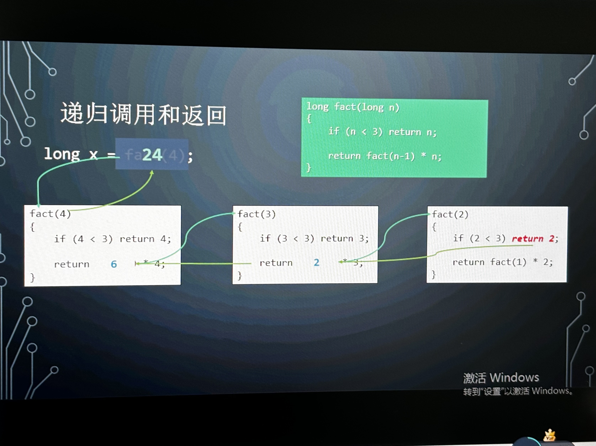
不明显的递归：Hanoi问题
23.11.06
1. 字符串
字符串要用 "" 包围
任何字符串的尾巴都有一个0（ASCII码为0的字符）。
字符串的长度指的是有效长度（不计分尾0）；存储长度包括分尾0
字符串是什么？
用""包围的一段字符串是字符串常量，它是一个字符指针，指针指向的是字符串第一个字符的地址。
因此字符串等号比较比较的不是内容，而是首字母的地址
字符串的声明
如果要把字符串当作变量来看的话，必须把字符串放到一个长度足够的数组中来使用
- ***字符数组(最常用)
char date[8] = "Oct 1"; // 这里"Oct 1"表示一个常量
char date[] = "Oct 1"; // 这里date字符串的长度是6而不是5.
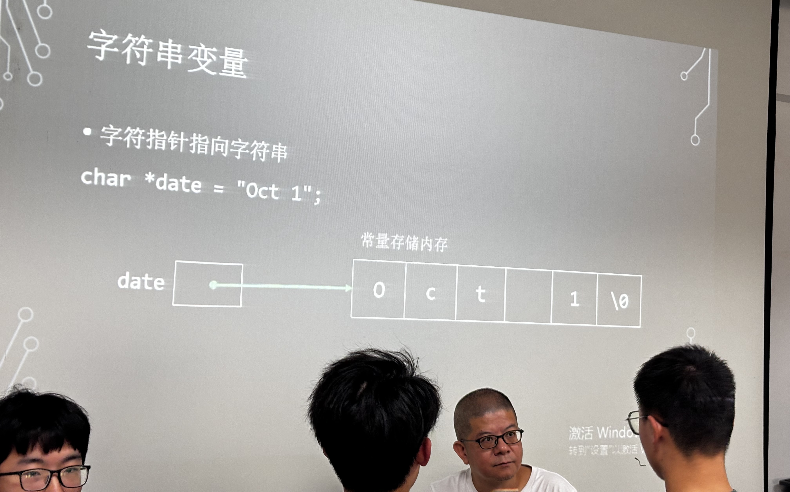
数组版的date指针指向的是字符串的副本，可修改
- 指针（不可修改）
char *date = "Oct 1"; // 会把字符串储存到常量存储区
指针版的date指针会直接指向此字符串的常量存储区，不可修改，所以一般不这样使用
字符串作为函数参数
size_t strlen(const char str[]);
size_t strlen(const char *str);
即要加const修饰
字符串的读写
读：printf()的%s格式以及puts函数
写： 1. scanf - 空格是字符串的结尾标志 2. gets - 换行是字符串的结尾标志
doxygen注释插件
字符串的比较
用""包围的一段字符串是字符串常量，它是一个指针，指针指向的是字符串第一个字符的地址。因此字符串等号比较比较的不是内容，而是首字母的地址
字符串的比较遵循字母序比较：在字典中，单词是按照首字母在字母表中的顺序进行排列的，比如 alpha 在 beta 之前。而第一个字母相同时，会去比较两个单词的第二个字母在字母表中的顺序，比如 account 在 advanced 之前，以此类推。
这种比较要用到c库函数 strcmp
两个字符串相等得到的比较结果是0，大于的比较结果是一个正值，小于的比较结果是一个负值。
字符串数组
如果字符串是变量的话，字符串的原始存储必须是数组，然后用指针指向数组，从而进行初始化与更改
二维字符数组
char strs[][5] = {"abc", "de", "fsda"};
第二维的5必须要写。而初始化一维数组的时候可以不写。
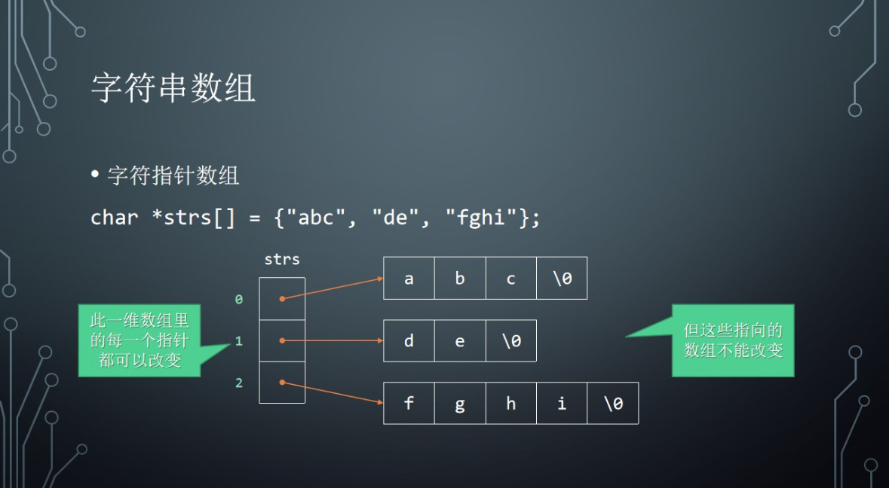
讲义代码以及笔记：
/**
* @file string.c
* @author 白忠建 (baizj@uestc.edu.cn)
* @brief 模仿C的字符串处理函数的实现
* @version 0.1
* @date 2023-11-06
*
* @copyright Copyright (C) 2023 白忠建. All rights reserved.
*
*/
#include <stdio.h>
/**
* @brief 求字符串的长度。不计结尾'\0'
*
* @param s 字符串（指针）
* @return int 字符串长度
*/
int Strlen(const char *s) {
//TODO
// int c;
// for (c = 0; s[c] != "\0"; ++c) {
// /* code */
// }
// return c;
const char *p = s;
while (*p != '\0') { // *p != '\0' <==> *p (c语言把任何不等于 0 的表达式都当做 真)
++p;
}
return p - s;
}
/**
* @brief 将源字符串s复制到目的字符串t中
*
* @param t 目的字符串
* @param s 源字符串。注意：是指向常量的指针
* @return char* 目的字符串
*/
char * Strcpy(char *t, const char *s) { // 目的字符串放在左边，原字符串放在右边
//TODO
// int i;
// for (i = 0;s[i] != '\0'; ++i) {
// t[i] = s[i];
// }
// t[i] = '\0'; // 一定要给字符串分尾。
// for (i = 0; (t[i] = s[i]) != '\0'; ++i);
char *p = t;
// while ((*p = *s) != '\0') ++p, ++s; // 逗号运算符 - 优先级最低 - 从左到右执行 - 整个表达式的结果是最右边表达式的结果
// 典型的双指针操作
// (*p = *s) != '\0' <===> (*p = *s)
while ((*p = *s)) ++p, ++s; // 先判断再自加
while ((*p++ = *s++)); // 先自加再判断
// *p++ - 整个表达式指向的是前面一个单位，p指针自加，指向后一个单位
return t;
}
/**
* @brief 比较两个字符串s和t的大小。字符串的比较定义为串的字典序的比较
*
* @param s 字符串1
* @param t 字符串2
* @return int 比较结果。如果s大于、等于、小于t，分别返回正值、0、负值。注：有些实现中，大于返回1，小于返回-1
*/
int Strcmp(const char *s, const char *t) { // 这里的const使 *s 和 *t 不能被改变（*s = 1 是错的）
//TODO
while (*s || *t) {
// if (*s > *t) {
// return 1;
// } else if (*s < *t) {
// return -1;
// }
if (*s != *t) {
return *s - *t; // 这里会使用*s/t指向字符的ascii码来加减
}
++s;
++t;
}
return 0; // 相同时的返回值
}
/**
* @brief 字符串拼接：将源字符串s拼接到目的字符串t的尾部（注：要覆盖其封尾0）
*
* @param t 目的字符串
* @param s 源字符串
* @return char* 目的字符串
*/
char * Strcat(char *t, const char *s) {
//TODO
char *p = t; // p是工作指针
while (*p) ++p;
Strcpy(p, s);
return NULL;
}
/**
* @brief 判断字符ch是否在字符串s中
*
* @param s 字符串
* @param ch 待查找的字符
* @return char* 如果ch在s中，返回指向ch的指针；否则返回NULL
*/
char * Strchr(const char *s, char ch) {
//TODO
return NULL;
}
// 请自行实现如下函数：
/**
* @brief 将源字符串s的前n个字符依次复制到目的字符串t中，自动封尾。不妨称s的前n个字符组成了一个“子串”
*
* @param t 目的字符串
* @param s 源字符串
* @param n 子串长度
* @return char* 目的字符串
*/
char * Strncpy(char *t, const char *s, int n) {
return NULL;
}
/**
* @brief 比较字符串s和t的前n个字符。不妨称这前n个字符组成了一个“子串”
*
* @param s 字符串1
* @param t 字符串2
* @param n 子串长度
* @return int 比较结果。如果s的子串大于、等于、小于t的，分别返回正值、0、负值。注：有些实现中，大于返回1，小于返回-1
*/
int Strncmp(const char *s, const char *t, int n) {
return 0;
}
/**
* @brief 测试函数
*
* @return int
*/
int main() {
char buf[128], buf2[128];
char *str = buf; // 不能不写 = buf ，否则会成为野指针
// 输入源字符串
scanf("%s", str);
// gets(str);
// 测试字符串长度
printf("strlen: %d\n", Strlen(str));
// // 测试字符串复制
Strcpy(buf2, str);
printf("strcpy: %s\n", buf2);
// // 测试字符串比较
buf2[0] = buf2[1];
int k = Strcmp(buf, buf2);
if (k == 0) {
printf("strcmp: euqal\n");
} else if (k > 0) {
printf("strcmp: greater\n");
} else {
printf("strcmp: lesser\n");
}
// // 测试字符串拼接
// printf("strcat: %s\n", Strcat(buf2, "xyz"));
// // 测试字符查找
// char ch = '&';
// char *p = Strchr(buf2, ch);
// printf("strchr: '%c':%s\n", ch, p ? "found" : "not found");
return 0;
}
c的字符串库
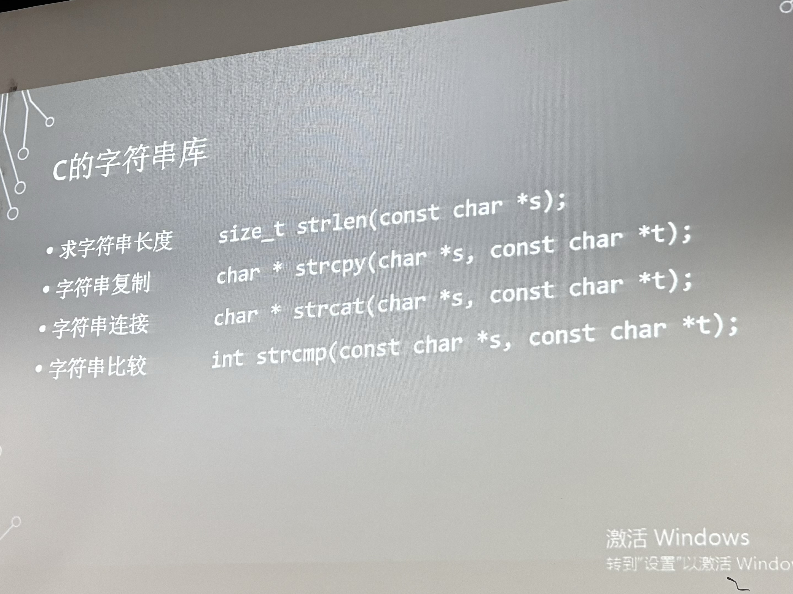
- 如果要比较的对象是char*字符串
利用:
int strcmp(const char* s1,const char* s2);
(1) 当s1 < s2时，返回负数；
(2) 当s1 == s2时，返回值 = 0；
(3) 当s1 > s2时，返回正数。
所在头文件：string.h
课堂练习
判断一个字符串是否是回文序列
#include <stdio.h>
#include <stdbool.h>
bool is_palindrome(const char *s) {
const char *p = s;
while (*p) {
++p;
}
--p;
while (s < p) {
if (*s != *p) return false;
++s, --p;
}
return true;
}
int main() {
char buf[128];
scanf("%s", buf);
printf(is_palindrome(buf) ? "yes\n" : "no\n");
return 0;
}
bool类型的使用 ^
23.11.13
1. 结构
引言：
数据的内聚性
- 一件事物的某项特征称为该事物的“属性(attribute/property)”
- 事物的属性不止一项
- 这些属性间都有内在的联系。这是数据的“内聚性”
- 零散的变量无法刻画它们之间的内聚性
- 解决方案：将它们“聚集(aggregate)”在一起
结构是什么：
结构是一种刻画事物内聚性的机制
struct student {
long id;
char name;
char gender;
int age;
};
// 注意一定有个分号
与数组的异同： * 数组是同类型，结构是不同类型 * 数组可以用循环遍历，而结构体不能用循环遍历（因为类型不同）
定义结构类型
struct student { // student是结构标记名（tagname），不是类型名
long id;
char name[50];
char gender;
int age;
};
注意：
-
student是结构标记名（tagname），不是类型名
-
这是在声明一种结构类型，而不是在定义变量
-
这种结构类型的类型名是
struct student（所以声明变量的语句是struct student s（这里s是变量名））
我们可以用 typedef 关键字来为这种类型重新命名（以使这种类型名可以用一个单词表示（使类型的使用变的更简单））如：
typedef struct student{
long id;
char name[50];
} stu;
在这之中：stu为类型struct student的别名，等价于struct student。

定义结构变量
struct student s (= {a, b, c, d, ...});
layout（内存布局）：偶数字节对齐/4字节对齐/8字节对齐 - 是一种不严格的布局，所以不能想当然的认为成员的内存相邻

定义结构变量的其他方式
struct student {
long id;
char name[50];
char gender;
int age;
} s (= {a, b, c, d});
结构内不能包含函数
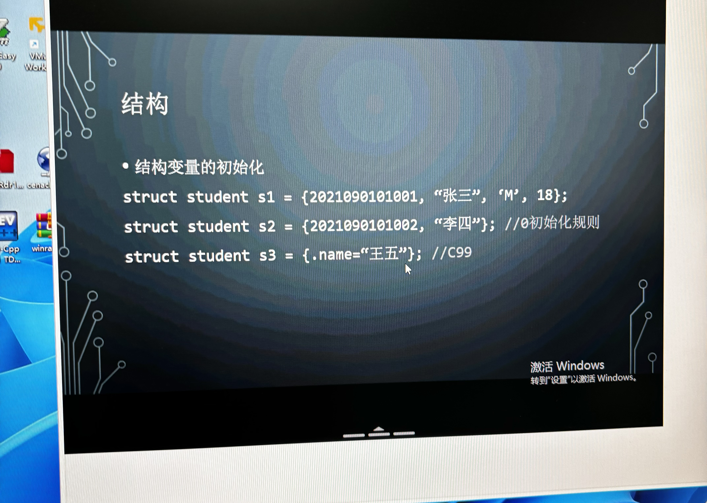
注意：结构变量的初始化遵循0初始化原则
区分：结构标记名和类型名（下图）


使用结构的成员
使用.成员选择运算符 - .具有相当高的优先级
s1.age = 1; // ++和.的优先级一样高，但都是左结合
++s1.age是给age自加，而不是给s1自加
结构变量的输入和输出
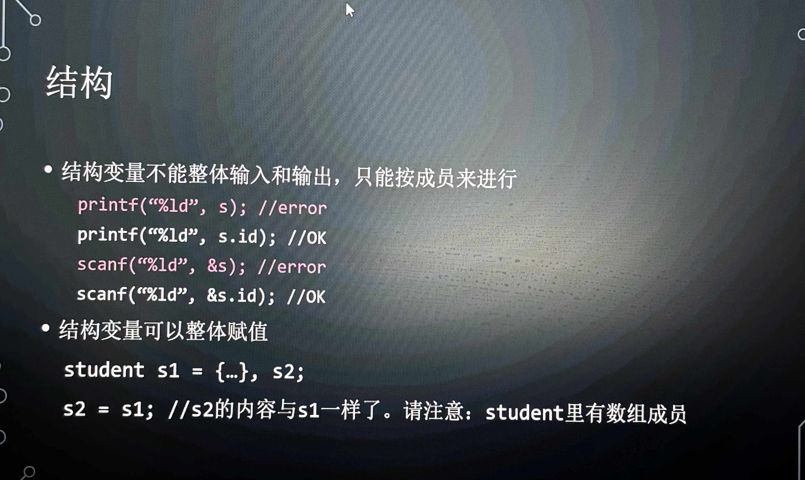
结构变量与函数
结构变量可以作为函数的参数
long get_id(student s) { // 遵循传值调用的原则
return s.id;
}
结构类型可以作为函数的返回值类型
student new_student(long id, char* name) {
student s = {id, name};
return s;
}
结构的嵌套定义
typedef struct {
long id;
char name[50];
struct date {
int year, month, day;
} dob; // dob表示date of birth（出生日期）
} student;
以上代码等价于
struct date {
int year, month, day;
} date;
typedef struct {
long id;
char name[50];
date dob;
} student;
结构嵌套成员的使用
student s;
s.dob.year = 2003;
结构数组
结构数组的初始化
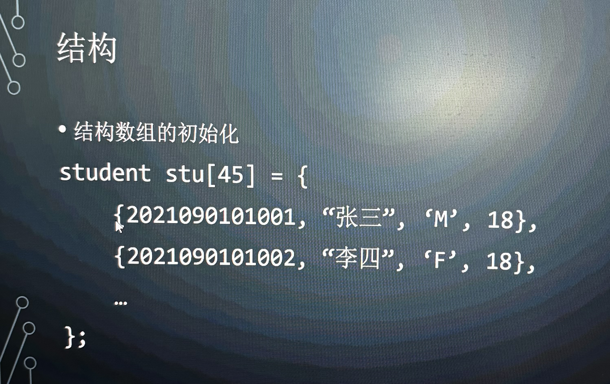
指向结构变量的指针
student s, *p = &s; // 见下图

成员选择运算符->
// 指针名 -> 成员名
p->id = 2021090101001;
p->dob.year = 2003; //->和.有相同的优先级，左结合
->的左边是一个指向结构的指针，右边是结构的成员名
还有一个成员选择运算符是.
扩展
无类型指针
void *p;
p可以指向任何类型的数据（特别是数组）
问题是：p认为自己指向的是无意义字节数组，并且不知道有多长
解决方案：指定单元的大小（字节数）：sizeof运算符
定义函数类型
例如有函数定义：
int f(int a) { return ++a; }
那么函数f的类型就是：int (int)
我们用typedef定义函数类型：
typedef int FN(int);
在这个类型定义中：新名字是FN，这是一种类型的名字，去掉FN后，剩下的部分是：int (int)，这就是FN代表的原类型。很明显，这是一种函数类型
综上，FN就是函数类型。属于这种类型的函数有这样的特征：
有一个整型参数，返回类型为整型
注意：
- 不能定义函数类型的变量
函数类型可以作为函数的参数。例如：
int g(int fn(), int x) { return fn(x); } //参数fn是个函数
int g(FN fn, int x) { return fn(x); }; //与上面的声明等价
调用时：
g(f, 1); //将函数f传递给g
指向函数的指针
函数也是一个对象，也可以用指针指向
前面提得到的f函数的类型是：int (int)
因此，指向函数的指针的基类型就是int (int)
定义指向函数的指针类型
typedef int (*FPTR)(int);
在这个类型定义中：
- 新名字是FPTR，这是一种类型的名字
- 这个名字先和*结合，因此是一种指针类型
- 去掉(*FPTR)后，剩下的部分是：int (int)，这就是指针类型的基类型。很明显，这是一种函数类型
综上，FPTR就是指向函数的指针类型
定义函数指针类型的变量
FPTR fp;
fp = f; //fp指向了函数f
fp(1); //通过调用fp调用f函数。等价于(*fp)(1)
- 指向函数的指针类型可以作为参数类型
int g(FPTR fn, int x) { return fn(x); }
g(f, 1); //将函数f作为参数传递给g函数
- 函数参数和函数指针参数是等价的
int g(int fn(int), int x);
int g(int (*fn)(int), int x);
int g(FN fn, int x); //FN -> int (int)
int g(FPTR fn, int x); //FPTR -> int (*)(int)
2. typedef关键字
typedef关键字的用法总结
typedef的用法有以下几种：
- 为已经存在的类型创建别名：typedef可以用来为已有类型创建一个新的别名，以方便在程序中使用。比如，可以使用typedef为int类型创建一个别名INT，这样在程序中就可以使用INT来代替int类型。
- 定义函数指针类型：可以用来定义函数指针类型，使得代码更加清晰易读，通过Uypedet定义的函数指针类型可以直接使用别名来声明函数指针变量。
- 简化复杂类型：当某个类型比较复杂时，使用typedef可以简化其声明，提高代码的可读性。比如，可以使用typedef为某个复杂的结构体类型创建一个别名，从而简化其声明和使用。
- 定义枚举类型：typedef可以用来定义枚举类型的别名，使得代码更加简洁明了。
需要注意的是，typedef只是为已有的类型创建别名，并不会创建新的类型。而且在使用typedef时，需要注意在语法上它是一个存储类的关键字，与auto、extern、static等关键字一样，不能与其它存储类关键字一起使用。
用来定义类型别名
typedef 旧类型名 ({}) 新类型名*
用来定义结构体、指针等复杂类型
typedef struct {
int x; int у;
} Point;
typedef int* IntPtr;
这样就可以使用 Point 和 IntPtr 分别代替结构体和指针类型的定义。
23.11.20
1. 链表
预备知识
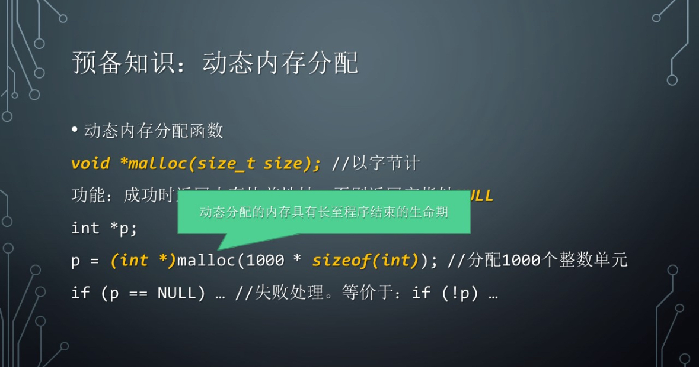
这里的(int )指的是malloc函数分配地址的基类型，类似指针初始化是也需要一个基类型如int p中p的基类型就是整形。
成功时返回首地址，失败时返回空指针NULL
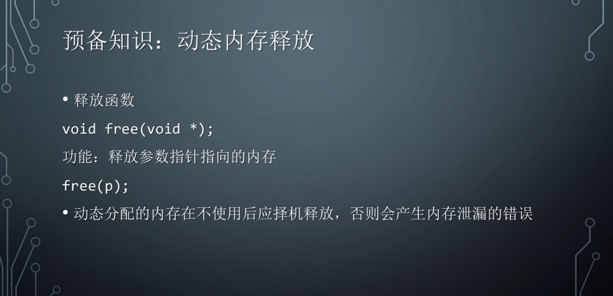
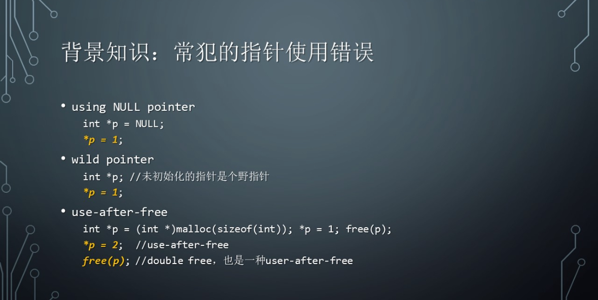
定义
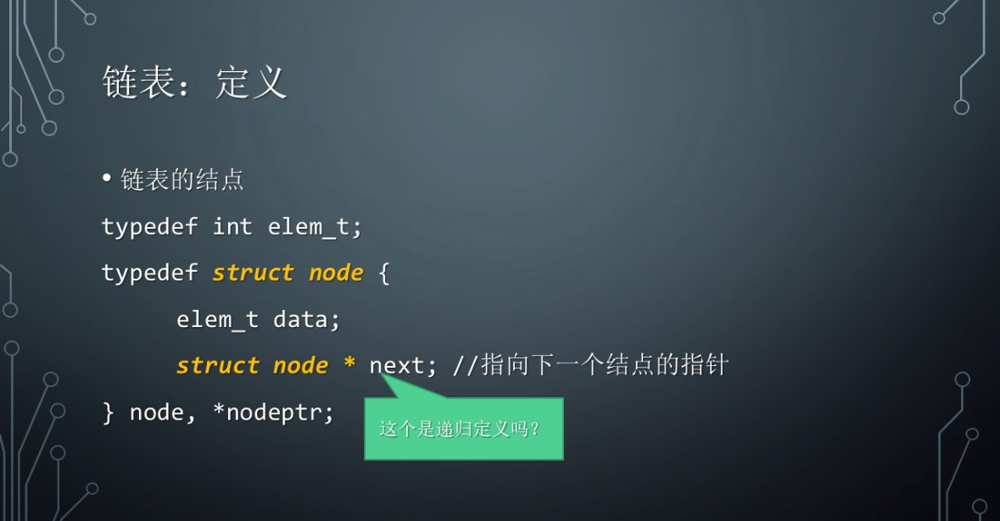
这里不是递归定义，因为有 * ，* 表示next是个指针，而不是node，这句话是指向下一个结点的指针
typedef中新名字可以定义多个，用逗号隔开：node和nodeptr
（nodeptr前面的*表示nodeptr的基（旧）类型是struct node *）
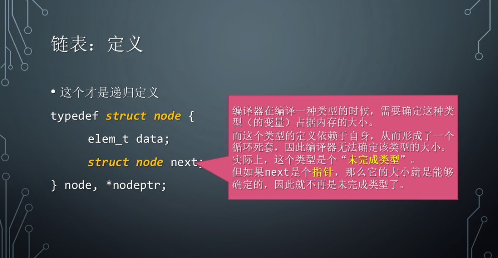
图示
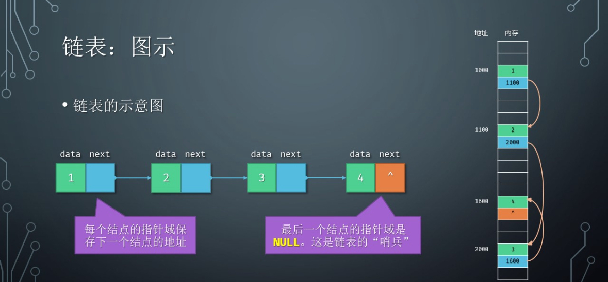
创建链表
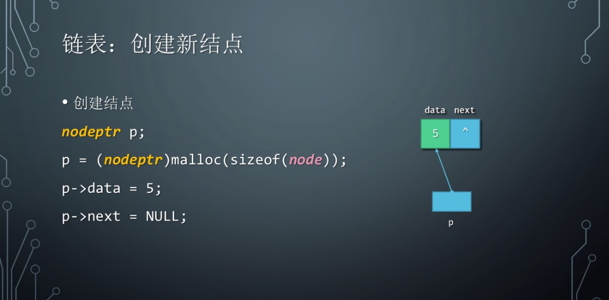
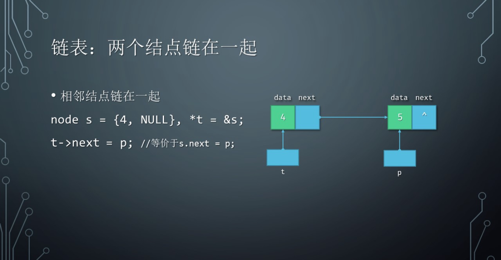
链表的表示法
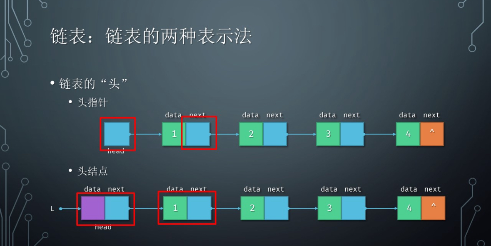
结点的插入
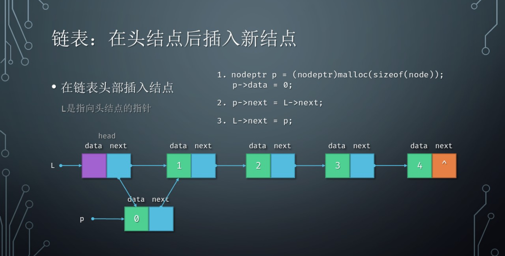


2. c语言中对文件的操作
文件的打开和关闭
- 文件指针
我们对文件进行一系列的操作——打开文件、关闭文件、向文件中写入数据、从文件中读出数据。所有的操作都离不开文件指针。
文件指针： FILE*
FILE：每个被使用的文件都在内存中开辟了一个相应的文件信息区，用来存放文件的相关信息（文件的名字，文件状态及文件当前的位置等）。这些信息是保存在一个结构体变量中，取名FILE。
FILE* ：通过一个FILE的指针来维护这个FILE结构的变量，对文件进行操作。
FILE* pf;//文件指针变量
pf是一个指向FILE类型数据的指针变量。即通过文件指针变量能够找到与它关联的文件。
- 文件的打开与关闭
(1)fopen函数
在C语言中，操作文件之前应该先打开文件。使用
用法如下：
//打开文件
FILE * fopen ( const char * filename, const char * mode );
// 第一个参数filename为文件名（包括文件路径），第二个参数mode为打开方式。若打开成功，fopen返回一个结构指针地址，否则返回NULL。
// 如果没有指定文件路径，则默认为当前工作目录。
// 例：
//首先定义文件指针：fp
FILE *fp;
//用fopen()函数卡开文件， r——>以只读方式打开
fp = fopen("test.txt", "r"); //没有指定文件路径，则默认为当前工作目录。
(2)fclose函数
在执行完文件的操作后，要用 fclose() 函数进行“关闭文件”操作。以此释放相关资源，避免数据丢失。同时也可提高系统整体的执行效率。
fclose() 的用法为：int fclose(FILE *fp);
//fp 为文件指针，关闭文件代码如下：
fclose(fp);
关闭成功返回值0，否则返回非零值。
以下是文件的打开方式：
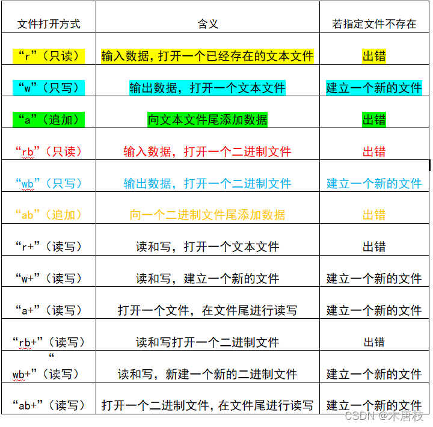
例：以只写方式打开 W
#include <stdio.h>
int main()
{
FILE* pf;
//打开文件
pf = fopen("file1.txt", "w");
//创建文件并进行判断
if (pf != NULL)
{
printf("打开文件成功！");
//关闭文件
fclose(pf);
}
return 0;
}
文件的顺序读写
打开文件后要对文件进行具体的操作，以下为文件的读写函数
功能 函数名
字符输入函数 fgetc
字符输出函数 fputc
文本行输入函数 gets
文本行输出函数 fputs
格式化输入函数 fscanf
格式化输出函数 fprintf
二进制输入 fread
二进制输出 fwrite
例：
#include <stdio.h>
int main()
{
FILE* fp;
fp = fopen("D:\\codeFile\\test1.txt", "r");
if (fp != NULL)
{
//feof(file stream )文件指针到达文件末尾
while (!feof(fp)) //读文件
printf("%c", fgetc(fp));
}
else
printf("fail to open! \n");
fclose(fp);
return 0;
}
结果：（feof()函数检查文件是否读取完毕）
23.12.4
1. 枚举
#include <stdio.h>
enum traffic {
RED, //默认为0
AMBER = 3, // 默认为上（前）一项加1 - 这样GREEN的值为4
GREEN
// 这三个东西是常量，默认为0
}; // 定义枚举常量
// enum这个类型默认是匿名的
// traffic 是枚举标志名
// 枚举的项都等同于整形（它们是等价的）（c++的枚举不等于整形），可以用在整形可使用的任何地方 - 只是用特定的字母代替一些整形
// 枚举常量的作用域是全局的
int main() {
enum traffic light;
return 0;
}
2. 联合
#include <stdio.h>
struct X {
int i;
double d;
};
union Y {
int i;
double d;
};
// 联合是一种特殊的结构
// 联合所有的成员都从相同的地址开始 => 联合的大小等于最大的项的大小
// 改变一项其余的项都会随之改变（其余项不一定合法）
// 常用于高级编程中的内存重解释
int main() {
return 0;
}